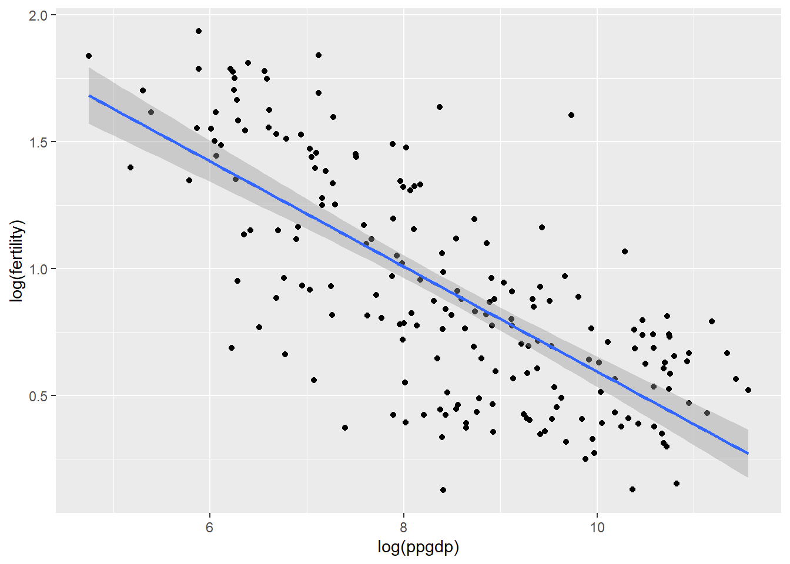
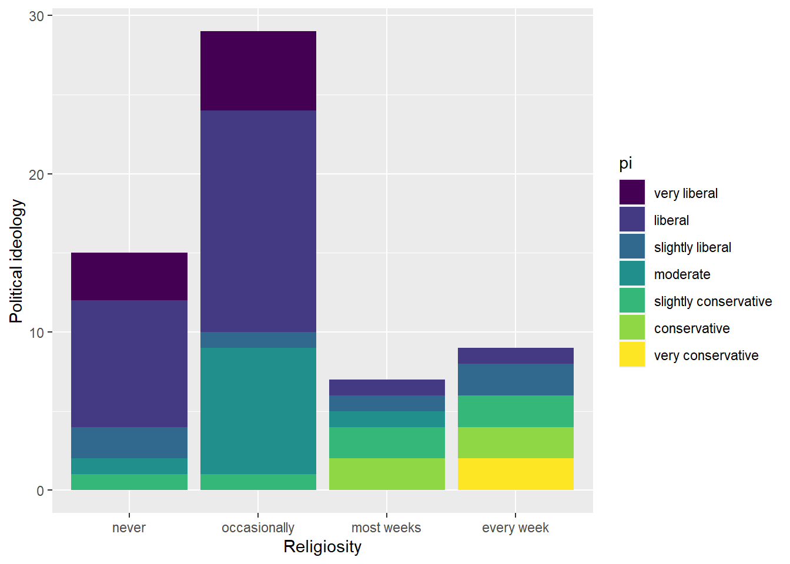
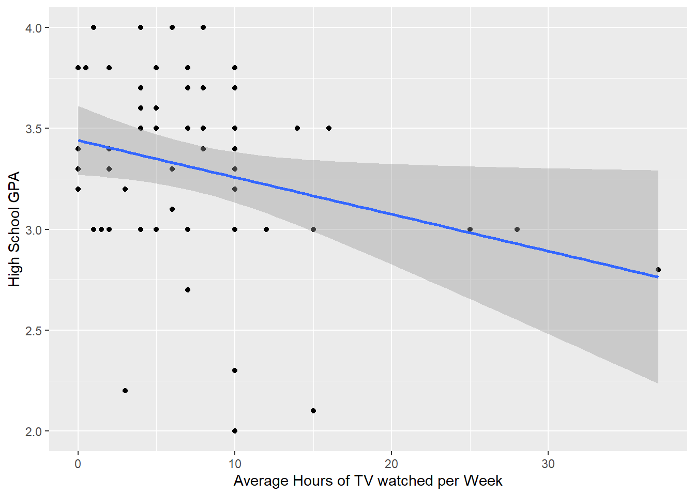

Code
library(tidyverse)
library(ggplot2)
library(stats)
library(alr4)
library(smss)
knitr::opts_chunk$set(echo = TRUE)library(tidyverse)
library(ggplot2)
library(stats)
library(alr4)
library(smss)
knitr::opts_chunk$set(echo = TRUE)data(UN11)
UN11 region group fertility ppgdp
Afghanistan Asia other 5.968000 499.0
Albania Europe other 1.525000 3677.2
Algeria Africa africa 2.142000 4473.0
Angola Africa africa 5.135000 4321.9
Anguilla Caribbean other 2.000000 13750.1
Argentina Latin Amer other 2.172000 9162.1
Armenia Asia other 1.735000 3030.7
Aruba Caribbean other 1.671000 22851.5
Australia Oceania oecd 1.949000 57118.9
Austria Europe oecd 1.346000 45158.8
Azerbaijan Asia other 2.148000 5637.6
Bahamas Caribbean other 1.877000 22461.6
Bahrain Asia other 2.430000 18184.1
Bangladesh Asia other 2.157000 670.4
Barbados Caribbean other 1.575000 14497.3
Belarus Europe other 1.479000 5702.0
Belgium Europe oecd 1.835000 43814.8
Belize Latin Amer other 2.679000 4495.8
Benin Africa africa 5.078000 741.1
Bermuda Caribbean other 1.760000 92624.7
Bhutan Asia other 2.258000 2047.2
Bolivia Latin Amer other 3.229000 1977.9
Bosnia and Herzegovina Europe other 1.134000 4477.7
Botswana Africa africa 2.617000 7402.9
Brazil Latin Amer other 1.800000 10715.6
Brunei Darussalam Asia other 1.984000 32647.6
Bulgaria Europe other 1.546000 6365.1
Burkina Faso Africa africa 5.750000 519.7
Burundi Africa africa 4.051000 176.6
Cambodia Asia other 2.422000 797.2
Cameroon Africa africa 4.287000 1206.6
Canada North America oecd 1.691000 46360.9
Cape Verde Africa africa 2.279000 3244.0
Cayman Islands Caribbean other 1.600000 57047.9
Central African Republic Africa africa 4.423000 450.8
Chad Africa africa 5.737000 727.4
Chile Latin Amer oecd 1.832000 11887.7
China Asia other 1.559000 4354.0
Colombia Latin Amer other 2.293000 6222.8
Comoros Africa africa 4.742000 736.6
Congo Africa africa 4.442000 2665.1
Cook Islands Oceania other 2.530806 12212.1
Costa Rica Latin Amer other 1.812000 7703.8
Cote dIvoire Africa africa 4.224000 1154.1
Croatia Europe other 1.501000 13819.5
Cuba Caribbean other 1.451000 5704.4
Cyprus Asia other 1.458000 28364.3
Czech Republic Europe oecd 1.501000 18838.8
Democratic Republic of the Congo Africa africa 5.485000 200.6
Denmark Europe oecd 1.885000 55830.2
Djibouti Africa africa 3.589000 1282.6
Dominica Caribbean other 3.000000 7020.8
Dominican Republic Caribbean other 2.490000 5195.4
East Timor Asia other 5.918000 706.1
Ecuador Latin Amer other 2.393000 4072.6
Egypt Africa africa 2.636000 2653.7
El Salvador Latin Amer other 2.171000 3425.6
Equatorial Guinea Africa africa 4.980000 16852.4
Eritrea Africa africa 4.243000 429.1
Estonia Europe oecd 1.702000 14135.4
Ethiopia Africa africa 3.848000 324.6
Fiji Oceania other 2.602000 3545.7
Finland Europe oecd 1.875000 44501.7
France Europe oecd 1.987000 39545.9
French Polynesia Oceania other 2.033000 24669.0
Gabon Africa africa 3.195000 12468.8
Gambia Africa africa 4.689000 579.1
Georgia Asia other 1.528000 2680.3
Germany Europe oecd 1.457000 39857.1
Ghana Africa africa 3.988000 1333.2
Greece Europe oecd 1.540000 26503.8
Greenland NorthAtlantic other 2.217000 35292.7
Grenada Caribbean other 2.171000 7429.0
Guatemala Latin Amer other 3.840000 2882.3
Guinea Africa africa 5.032000 427.5
Guinea-Bissau Africa africa 4.877000 539.4
Guyana Latin Amer other 2.190000 2996.0
Haiti Caribbean other 3.159000 612.7
Honduras Latin Amer other 2.996000 2026.2
Hong Kong Asia other 1.137000 31823.7
Hungary Europe oecd 1.430000 12884.0
Iceland Europe other 2.098000 39278.0
India Asia other 2.538000 1406.4
Indonesia Asia other 2.055000 2949.3
Iran Asia other 1.587000 5227.1
Iraq Asia other 4.535000 888.5
Ireland Europe oecd 2.097000 46220.3
Israel Asia oecd 2.909000 29311.6
Italy Europe oecd 1.476000 33877.1
Jamaica Caribbean other 2.262000 4899.0
Japan Asia oecd 1.418000 43140.9
Jordan Asia other 2.889000 4445.3
Kazakhstan Asia other 2.481000 9166.7
Kenya Africa africa 4.623000 801.8
Kiribati Oceania other 3.500000 1468.2
Kuwait Asia other 2.251000 45430.4
Kyrgyzstan Asia other 2.621000 865.4
Laos Asia other 2.543000 1047.6
Latvia Europe other 1.506000 10663.0
Lebanon Asia other 1.764000 9283.7
Lesotho Africa africa 3.051000 980.7
Liberia Africa africa 5.038000 218.6
Libya Africa africa 2.410000 11320.8
Lithuania Europe other 1.495000 10975.5
Luxembourg Europe oecd 1.683000 105095.4
Macao Asia other 1.163000 49990.2
Madagascar Africa africa 4.493000 421.9
Malawi Africa africa 5.968000 357.4
Malaysia Asia other 2.572000 8372.8
Maldives Asia other 1.668000 4684.5
Mali Africa africa 6.117000 598.8
Malta Europe other 1.284000 19599.2
Marshall Islands Oceania other 4.384466 3069.4
Mauritania Africa africa 4.361000 1131.1
Mauritius Africa africa 1.590000 7488.3
Mexico Latin Amer oecd 2.227000 9100.7
Micronesia Oceania other 3.307000 2678.2
Moldova Europe other 1.450000 1625.8
Mongolia Asia other 2.446000 2246.7
Montenegro Europe other 1.630000 6509.8
Morocco Africa africa 2.183000 2865.0
Mozambique Africa africa 4.713000 407.5
Myanmar Asia other 1.939000 876.2
Namibia Africa africa 3.055000 5124.7
Nauru Oceania other 3.300000 6190.1
Nepal Asia other 2.587000 534.7
Neth Antilles Caribbean other 1.900000 20321.1
Netherlands Europe oecd 1.794000 46909.7
New Caledonia Oceania other 2.091000 35319.5
New Zealand Oceania oecd 2.135000 32372.1
Nicaragua Latin Amer other 2.500000 1131.9
Niger Africa africa 6.925000 357.7
Nigeria Africa africa 5.431000 1239.8
North Korea Asia other 1.988000 504.0
Norway Europe oecd 1.948000 84588.7
Oman Asia other 2.146000 20791.0
Pakistan Asia other 3.201000 1003.2
Palau Oceania other 2.000000 10821.8
Palestinian Territory Asia other 4.270000 1819.5
Panama Latin Amer other 2.409000 7614.0
Papua New Guinea Oceania other 3.799000 1428.4
Paraguay Latin Amer other 2.858000 2771.1
Peru Latin Amer other 2.410000 5410.7
Philippines Asia other 3.050000 2140.1
Poland Europe oecd 1.415000 12263.2
Portugal Europe oecd 1.312000 21437.6
Puerto Rico Caribbean other 1.757000 26461.0
Qatar Asia other 2.204000 72397.9
Republic of Korea Asia other 1.389000 21052.2
Romania Europe other 1.428000 7522.4
Russian Federation Europe other 1.529000 10351.4
Rwanda Africa africa 5.282000 532.3
Saint Lucia Caribbean other 1.907000 6677.1
Samoa Oceania other 3.763000 3343.3
Sao Tome and Principe Africa africa 3.488000 1283.3
Saudi Arabia Asia other 2.639000 15835.9
Senegal Africa africa 4.605000 1032.7
Serbia Europe other 1.562000 5123.2
Seychelles Africa africa 2.340000 11450.6
Sierra Leone Africa africa 4.728000 351.7
Singapore Asia other 1.367000 43783.1
Slovakia Europe oecd 1.372000 15976.0
Slovenia Europe oecd 1.477000 23109.8
Solomon Islands Oceania other 4.041000 1193.5
Somalia Africa africa 6.283000 114.8
South Africa Africa africa 2.383000 7254.8
Spain Europe other 1.504000 30542.8
Sri Lanka Asia other 2.235000 2375.3
St Vincent and Grenadines Caribbean other 1.995000 6171.7
Sudan Africa africa 4.225000 1824.9
Suriname Latin Amer other 2.266000 7018.0
Swaziland Africa africa 3.174000 3311.2
Sweden Europe oecd 1.925000 48906.2
Switzerland Europe oecd 1.536000 68880.2
Syria Asia other 2.772000 2931.5
Tajikistan Asia other 3.162000 816.0
Tanzania Africa africa 5.499000 516.0
TFYR Macedonia Europe other 1.397000 4434.5
Thailand Asia other 1.528000 4612.8
Togo Africa africa 3.864000 524.6
Tonga Oceania other 3.783000 3543.1
Trinidad and Tobago Caribbean other 1.632000 15205.1
Tunisia Africa africa 1.909000 4222.1
Turkey Asia oecd 2.022000 10095.1
Turkmenistan Asia other 2.316000 4587.5
Tuvalu Oceania other 3.700000 3187.2
Uganda Africa africa 5.901000 509.0
Ukraine Europe other 1.483000 3035.0
United Arab Emirates Asia other 1.707000 39624.7
United Kingdom Europe oecd 1.867000 36326.8
United States North America oecd 2.077000 46545.9
Uruguay Latin Amer other 2.043000 11952.4
Uzbekistan Asia other 2.264000 1427.3
Vanuatu Oceania other 3.750000 2963.5
Venezuela Latin Amer other 2.391000 13502.7
Viet Nam Asia other 1.750000 1182.7
Yemen Asia other 4.938000 1437.2
Zambia Africa africa 6.300000 1237.8
Zimbabwe Africa africa 3.109000 573.1
lifeExpF pctUrban
Afghanistan 49.49000 23
Albania 80.40000 53
Algeria 75.00000 67
Angola 53.17000 59
Anguilla 81.10000 100
Argentina 79.89000 93
Armenia 77.33000 64
Aruba 77.75000 47
Australia 84.27000 89
Austria 83.55000 68
Azerbaijan 73.66000 52
Bahamas 78.85000 84
Bahrain 76.06000 89
Bangladesh 70.23000 29
Barbados 80.26000 45
Belarus 76.37000 75
Belgium 82.81000 97
Belize 77.81000 53
Benin 58.66000 42
Bermuda 82.30000 100
Bhutan 69.84000 35
Bolivia 69.40000 67
Bosnia and Herzegovina 78.40000 49
Botswana 51.34000 62
Brazil 77.41000 87
Brunei Darussalam 80.64000 76
Bulgaria 77.12000 72
Burkina Faso 57.02000 27
Burundi 52.58000 11
Cambodia 65.10000 20
Cameroon 53.56000 59
Canada 83.49000 81
Cape Verde 77.70000 62
Cayman Islands 83.80000 100
Central African Republic 51.30000 39
Chad 51.61000 28
Chile 82.35000 89
China 75.61000 48
Colombia 77.69000 75
Comoros 63.18000 28
Congo 59.33000 63
Cook Islands 76.24547 76
Costa Rica 81.99000 65
Cote dIvoire 57.71000 51
Croatia 80.37000 58
Cuba 81.33000 75
Cyprus 82.14000 71
Czech Republic 81.00000 74
Democratic Republic of the Congo 50.56000 36
Denmark 81.37000 87
Djibouti 60.04000 76
Dominica 78.20000 67
Dominican Republic 76.57000 70
East Timor 64.20000 29
Ecuador 78.91000 68
Egypt 75.52000 44
El Salvador 77.09000 65
Equatorial Guinea 52.91000 40
Eritrea 64.41000 22
Estonia 79.95000 70
Ethiopia 61.59000 17
Fiji 72.27000 52
Finland 83.28000 85
France 84.90000 86
French Polynesia 78.07000 51
Gabon 64.32000 86
Gambia 60.30000 59
Georgia 77.31000 53
Germany 82.99000 74
Ghana 65.80000 52
Greece 82.58000 62
Greenland 71.60000 84
Grenada 77.72000 40
Guatemala 75.10000 50
Guinea 56.39000 36
Guinea-Bissau 50.40000 30
Guyana 73.45000 29
Haiti 63.87000 54
Honduras 75.92000 52
Hong Kong 86.35000 100
Hungary 78.47000 68
Iceland 83.77000 94
India 67.62000 30
Indonesia 71.80000 45
Iran 75.28000 71
Iraq 72.60000 66
Ireland 83.17000 62
Israel 84.19000 92
Italy 84.62000 69
Jamaica 75.98000 52
Japan 87.12000 67
Jordan 75.17000 79
Kazakhstan 72.84000 59
Kenya 59.16000 23
Kiribati 63.10000 44
Kuwait 75.89000 98
Kyrgyzstan 72.36000 35
Laos 69.42000 34
Latvia 78.51000 68
Lebanon 75.07000 87
Lesotho 48.11000 28
Liberia 58.59000 48
Libya 77.86000 78
Lithuania 78.28000 67
Luxembourg 82.67000 85
Macao 83.80000 100
Madagascar 68.61000 31
Malawi 55.17000 20
Malaysia 76.86000 73
Maldives 78.70000 41
Mali 53.14000 37
Malta 82.29000 95
Marshall Islands 70.60000 72
Mauritania 60.95000 42
Mauritius 76.89000 42
Mexico 79.64000 78
Micronesia 70.17000 23
Moldova 73.48000 48
Mongolia 72.83000 63
Montenegro 77.37000 61
Morocco 74.86000 59
Mozambique 51.81000 39
Myanmar 67.87000 34
Namibia 63.04000 39
Nauru 57.10000 100
Nepal 70.05000 19
Neth Antilles 79.86000 93
Netherlands 82.79000 83
New Caledonia 80.49000 57
New Zealand 82.77000 86
Nicaragua 77.45000 58
Niger 55.77000 17
Nigeria 53.38000 51
North Korea 72.12000 60
Norway 83.47000 80
Oman 76.44000 73
Pakistan 66.88000 36
Palau 72.10000 84
Palestinian Territory 74.81000 74
Panama 79.07000 75
Papua New Guinea 65.52000 13
Paraguay 74.91000 62
Peru 76.90000 77
Philippines 72.57000 49
Poland 80.56000 61
Portugal 82.76000 61
Puerto Rico 83.20000 99
Qatar 78.24000 96
Republic of Korea 83.95000 83
Romania 77.95000 58
Russian Federation 75.01000 73
Rwanda 57.13000 19
Saint Lucia 77.54000 28
Samoa 76.02000 20
Sao Tome and Principe 66.48000 63
Saudi Arabia 75.57000 82
Senegal 60.92000 43
Serbia 77.05000 56
Seychelles 78.00000 56
Sierra Leone 48.87000 39
Singapore 83.71000 100
Slovakia 79.53000 55
Slovenia 82.84000 49
Solomon Islands 70.00000 19
Somalia 53.38000 38
South Africa 54.09000 62
Spain 84.76000 78
Sri Lanka 78.40000 14
St Vincent and Grenadines 74.73000 50
Sudan 63.82000 41
Suriname 74.18000 70
Swaziland 48.54000 21
Sweden 83.65000 85
Switzerland 84.71000 74
Syria 77.72000 56
Tajikistan 71.23000 26
Tanzania 60.31000 27
TFYR Macedonia 77.14000 59
Thailand 77.76000 34
Togo 59.40000 44
Tonga 75.38000 24
Trinidad and Tobago 73.82000 14
Tunisia 77.05000 68
Turkey 76.61000 70
Turkmenistan 69.40000 50
Tuvalu 65.10000 51
Uganda 55.44000 13
Ukraine 74.58000 69
United Arab Emirates 78.02000 84
United Kingdom 82.42000 80
United States 81.31000 83
Uruguay 80.66000 93
Uzbekistan 71.90000 36
Vanuatu 73.58000 26
Venezuela 77.73000 94
Viet Nam 77.44000 31
Yemen 67.66000 32
Zambia 50.04000 36
Zimbabwe 52.72000 39The predictor variable is ppgdp and the response variable is fertility.
UN11 %>%
select(c(ppgdp, fertility)) %>%
ggplot(aes(x = ppgdp, y = fertility)) +
geom_point() +
geom_smooth(method = lm)`geom_smooth()` using formula = 'y ~ x'
The graph shows an intense negative relationship between a country’s gross national product per person and fertility rate at the beginning, then appears to be little change in fertility in relationship to ppgdp moving beyond this point. A straight-line mean function does not seem to be an appropriate measure for summary of this graph.
UN11 %>%
select(c(ppgdp, fertility)) %>%
ggplot(aes(x = log(ppgdp), y = log(fertility))) +
geom_point() +
geom_smooth(method = lm)`geom_smooth()` using formula = 'y ~ x'
The relationship between the variables appears to be negative throughout the graph. The simple linear regression seems plausible to summarise this graph
UN11$british <- 1.33 * UN11$ppgdp
summary(lm(fertility ~ british, UN11))
Call:
lm(formula = fertility ~ british, data = UN11)
Residuals:
Min 1Q Median 3Q Max
-1.9006 -0.8801 -0.3547 0.6749 3.7585
Coefficients:
Estimate Std. Error t value Pr(>|t|)
(Intercept) 3.178e+00 1.048e-01 30.331 < 2e-16 ***
british -2.407e-05 3.500e-06 -6.877 7.9e-11 ***
---
Signif. codes: 0 '***' 0.001 '**' 0.01 '*' 0.05 '.' 0.1 ' ' 1
Residual standard error: 1.206 on 197 degrees of freedom
Multiple R-squared: 0.1936, Adjusted R-squared: 0.1895
F-statistic: 47.29 on 1 and 197 DF, p-value: 7.903e-11summary(lm(fertility ~ ppgdp, UN11))
Call:
lm(formula = fertility ~ ppgdp, data = UN11)
Residuals:
Min 1Q Median 3Q Max
-1.9006 -0.8801 -0.3547 0.6749 3.7585
Coefficients:
Estimate Std. Error t value Pr(>|t|)
(Intercept) 3.178e+00 1.048e-01 30.331 < 2e-16 ***
ppgdp -3.201e-05 4.655e-06 -6.877 7.9e-11 ***
---
Signif. codes: 0 '***' 0.001 '**' 0.01 '*' 0.05 '.' 0.1 ' ' 1
Residual standard error: 1.206 on 197 degrees of freedom
Multiple R-squared: 0.1936, Adjusted R-squared: 0.1895
F-statistic: 47.29 on 1 and 197 DF, p-value: 7.903e-11The magnitude of the slope has reduced very slightly, the slope of the prediction equation changed.
cor(UN11$ppgdp, UN11$fertility)[1] -0.4399891cor(UN11$british, UN11$fertility)[1] -0.4399891The correlation does not change after the conversion.
data(water)
colnames(water)[1] "Year" "APMAM" "APSAB" "APSLAKE" "OPBPC" "OPRC" "OPSLAKE"
[8] "BSAAM" pairs(water)
From the above plot, it seems that the stream run-off variable has a relationship to the ‘O’ named lakes but no real notable relationship to the ‘A’ named lakes.
data(Rateprof)
rate <- Rateprof %>% select(quality, helpfulness, clarity, easiness, raterInterest)
pairs(rate)
Interpreting to the scatter plot matrix of the average professor ratings for the topics of quality, clarity, helpfulness, easiness, and rater interest, the variables quality, clarity, and helpfulness appear to each have strong positive correlations with each other. The variable easiness appears to have a much weaker positive correlation with helpfulness, clarity, and quality. Rater interest does not appear to have much of a correlation to any of the other variables.So, we can say that Quality, helpfulness and clarity have the clearest linear relationships with one another and Easiness and raterInterest do not seem to have linear relationships with the other variables.
data(student.survey)
head(student.survey) subj ge ag hi co dh dr tv sp ne ah ve pa pi re
1 1 m 32 2.2 3.5 0 5.0 3 5 0 0 FALSE r conservative most weeks
2 2 f 23 2.1 3.5 1200 0.3 15 7 5 6 FALSE d liberal occasionally
3 3 f 27 3.3 3.0 1300 1.5 0 4 3 0 FALSE d liberal most weeks
4 4 f 35 3.5 3.2 1500 8.0 5 5 6 3 FALSE i moderate occasionally
5 5 m 23 3.1 3.5 1600 10.0 6 6 3 0 FALSE i very liberal never
6 6 m 39 3.5 3.5 350 3.0 4 5 7 0 FALSE d liberal occasionally
ab aa ld
1 FALSE FALSE FALSE
2 FALSE FALSE NA
3 FALSE FALSE NA
4 FALSE FALSE FALSE
5 FALSE FALSE FALSE
6 FALSE FALSE NAstudent.survey %>%
select(c(pi, re)) %>%
ggplot() +
geom_bar(aes(x = re, fill = pi)) +
xlab("Religiosity") +
ylab("Political ideology") 
Religiosity and conservatism seem to have a positive relationship.
student.survey %>%
select(c(tv, hi)) %>%
ggplot(aes(x = tv, y = hi)) +
geom_point() +
geom_smooth(method=lm) +
xlab("Average Hours of TV watched per Week") +
ylab("High School GPA") `geom_smooth()` using formula = 'y ~ x'
High school GPA and TV-watching seem to have a negative relationship.
summary(lm(data = student.survey, formula = as.numeric(pi) ~ as.numeric(re)))
Call:
lm(formula = as.numeric(pi) ~ as.numeric(re), data = student.survey)
Residuals:
Min 1Q Median 3Q Max
-2.81243 -0.87160 0.09882 1.12840 3.09882
Coefficients:
Estimate Std. Error t value Pr(>|t|)
(Intercept) 0.9308 0.4252 2.189 0.0327 *
as.numeric(re) 0.9704 0.1792 5.416 1.22e-06 ***
---
Signif. codes: 0 '***' 0.001 '**' 0.01 '*' 0.05 '.' 0.1 ' ' 1
Residual standard error: 1.345 on 58 degrees of freedom
Multiple R-squared: 0.3359, Adjusted R-squared: 0.3244
F-statistic: 29.34 on 1 and 58 DF, p-value: 1.221e-06At a significance level of 0.01, there is a statistically significant association between religiosity and political ideology (as p-value < .01). The correlation is moderate and positive, suggesting that as weekly church attendance increases, political ideology becomes more conservative leaning.
summary(lm(data = student.survey, formula = hi ~ tv))
Call:
lm(formula = hi ~ tv, data = student.survey)
Residuals:
Min 1Q Median 3Q Max
-1.2583 -0.2456 0.0417 0.3368 0.7051
Coefficients:
Estimate Std. Error t value Pr(>|t|)
(Intercept) 3.441353 0.085345 40.323 <2e-16 ***
tv -0.018305 0.008658 -2.114 0.0388 *
---
Signif. codes: 0 '***' 0.001 '**' 0.01 '*' 0.05 '.' 0.1 ' ' 1
Residual standard error: 0.4467 on 58 degrees of freedom
Multiple R-squared: 0.07156, Adjusted R-squared: 0.05555
F-statistic: 4.471 on 1 and 58 DF, p-value: 0.03879With a slope of -0.018, there is a negative association between hours of tv watched per week and high school GPA, meaning that as hours of tv viewing increase, a student’s GPA tends to decrease. There is a statistically significant relationship between hours of tv viewed per week and GPA at a significance level of 0.05. However, the R-squared value is close to 0, which suggests that the regression model does not provide a strong prediction for the observed variables. This is not suprising after looking at the scatter plot with hours of tv watched and GPA, since there does not appear to be a linear trend in the data.